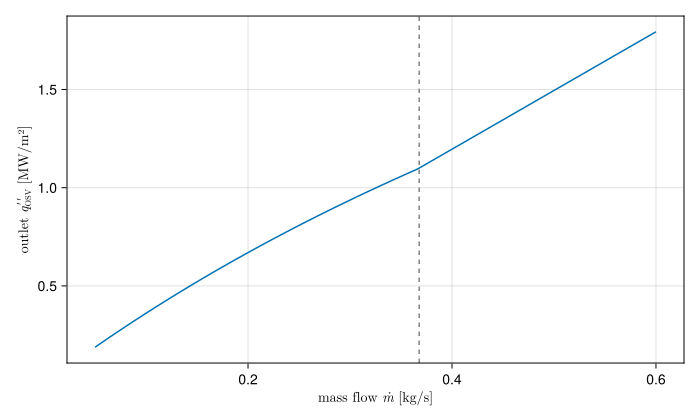

Onset of significant void
Past Onset of nucleate boiling, bubbles form at the wall but stay attached to it and collapse as soon as they meet the subcooled liquid further out. The void fraction stays negligible. Further along a heated channel the bulk gets close enough to saturation that bubbles detach from the wall and survive in the flow. From that point, the onset of significant void (OSV), also called the point of net vapour generation, the void fraction rises steeply even though the bulk is still on average subcooled.
OSV matters for two reasons. The void it starts is what bends the channel's pressure drop curve towards the Onset of flow instability, so OSV is a conservative stand-in for OFI, and some analyses use it as the instability limit directly. And past OSV a single-phase model, STREAM's included, no longer describes the channel.
The Saha-Zuber correlation
Saha and Zuber (Saha and Zuber, 1974), as presented in Collier and Thome (Collier and Thome, 1994) (pp. 226–227), argued that bubble departure is set by one of two mechanisms, depending on the Péclet number $\text{Pe} = G D_h c_p / k$:
At low Péclet number the process is thermally controlled: bubbles leave when the local subcooling is small enough for heat diffusion to sustain them, and the subcooling at OSV scales with a Nusselt number,
\[\text{Nu} = \frac{q''\,D_h}{k\,(T_\text{sat} - T_b)} = 455, \qquad \text{Pe} \le 70\,000.\]
At high Péclet number it is hydrodynamically controlled: bubbles are swept off by the flow, and the subcooling scales with a Stanton number,
\[\text{St} = \frac{q''}{G\,c_p\,(T_\text{sat} - T_b)} = 0.0065, \qquad \text{Pe} > 70\,000.\]
They fitted the two constants and the switch point to data for water and Freon in tubes, annuli and rectangular channels, covering pressures of roughly 1 to 138 bar, mass fluxes of 95 to 2760 kg/(m²·s) and heat fluxes of 0.28 to 1.89 MW/m². Both forms state the same thing: OSV happens where the local subcooling falls to $q''/X$, with
\[X = \frac{k}{D_h}\,\text{Nu}_c \;\;(\text{Pe} \le 70\,000), \qquad X = \text{St}_c\,G\,c_p \;\;(\text{Pe} > 70\,000).\]
$X$ is continuous at the switch, since $0.0065 \times 70\,000 = 455$ makes the two forms equal there, but its slope changes: below the switch it does not depend on the flow, above it it grows in proportion. An OSV margin plotted against flow therefore has a corner at the switch.
Computing the bulk at the OSV flux
The correlation relates the OSV heat flux to the local bulk temperature. But raising the heat flux to its OSV value also heats the bulk. Using the bulk temperature of the current solution would overstate the margin, because it belongs to a lower flux. STREAM, like Python STREAM's Saha_Zuber_OSV_computed_bulk, instead asks how far the whole flux profile can be scaled before OSV is reached somewhere.
Write the flux at OSV as $\alpha\,q''(z)$, with $q''(z)$ the current shape. At steady state the bulk at $z$ is then
\[T_b(z) = T_\text{in} + \frac{P_h}{\dot m\,c_p}\,\alpha\int_0^z q''\,dz'.\]
Setting $T_\text{sat} - T_b(z) = \alpha\,q''(z)/X$ and solving for $\alpha q''(z)$ gives
\[q''_\text{OSV}(z) = \frac{X\,(T_\text{sat} - T_\text{in})} {1 + \dfrac{X P_h}{\dot m\,c_p}\,\dfrac{\int_0^z q''\,dz'}{q''(z)}},\]
which does not depend on how $q''$ is normalised. The integral starts at whichever end the coolant enters, so it runs backwards under reversed flow. The ratio $q''_\text{OSV}(z)/q''(z)$ is the factor the power could rise by before OSV at that cell.
On one channel
The figure shows the OSV flux at the outlet of a uniformly heated plate-fuel channel against flow, with 40 °C water entering at 1.7 bar. The corner is the switch at $\text{Pe} = 70\,000$.
using STREAM, STREAM.Thresholds, CairoMakieCairoMakie.activate!(type="svg")pipe = PipeGeometry_rectangular(0.6, 0.067, 0.0024, 0.067)T_in, p, n = 40.0, 1.7e5, 20coolant = H2O(fill(T_in, n), fill(p, n))ṁ = range(0.05, 0.6; length=200)q_out = [last(q_OSV_saha_zuber(T_in, m, pipe, coolant)) for m in ṁ]Pe = [m / pipe.A * pipe.Dh * cₚ(H2O, T_in) / κ(H2O, T_in) for m in ṁ]fig = Figure(size=(700, 420))ax = Axis(fig[1, 1]; xlabel=L"mass flow $\dot{m}$ [kg/s]", ylabel=L"outlet $q''_\mathrm{OSV}$ [MW/m²]")lines!(ax, ṁ, q_out ./ 1e6)vlines!(ax, [ṁ[findfirst(>(7e4), Pe)]]; color=:gray, linestyle=:dash)fig
Here the coolant properties are taken at the inlet temperature in every cell. In threshold_analysis they are taken at each cell's bulk temperature and pressure from the solution.
In STREAM
q_OSV_saha_zuber returns the OSV flux per cell. On a ChannelState the flux shape is the solved flux of one face, the larger by default, and the coolant properties are those of the solved bulk. Python STREAM also has the plain form, which uses the current bulk temperature as it is. STREAM.jl leaves it out, since Python itself marks it as the one you probably do not want.
References
- Collier, J. G. and Thome, J. R. (1994). Convective Boiling and Condensation. 3 Edition (Oxford University Press, Oxford).
- Saha, P. and Zuber, N. (1974). Point of net vapor generation and vapor void fraction in subcooled boiling. In: Proceedings of the 5th International Heat Transfer Conference, Vol. 4 (Tokyo); pp. 175–179.